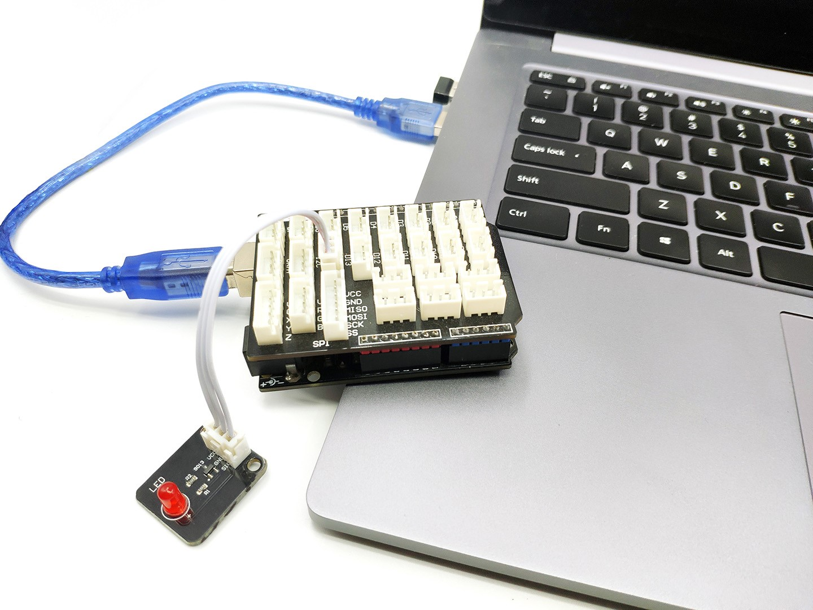

返回首页
Arduino官方提供的IDE是基于Processing的二次开发，功能也相对局限。Buddy++是我们基于Java FX框架重新开发的集成开发环境与Arduino官方的IDE相比除了界面更美观更优化，我们还针对零基础开发者设计了各种特色功能。
使用Buddy++进行Arduino应用开发流程十分简单，其主要有三个步骤，一是 编写程序，二是 编译，三是 烧录。
在把编译后的目标程序烧录到主控板之前，我们需要先使用USB数据线连接开发板与计算机。
